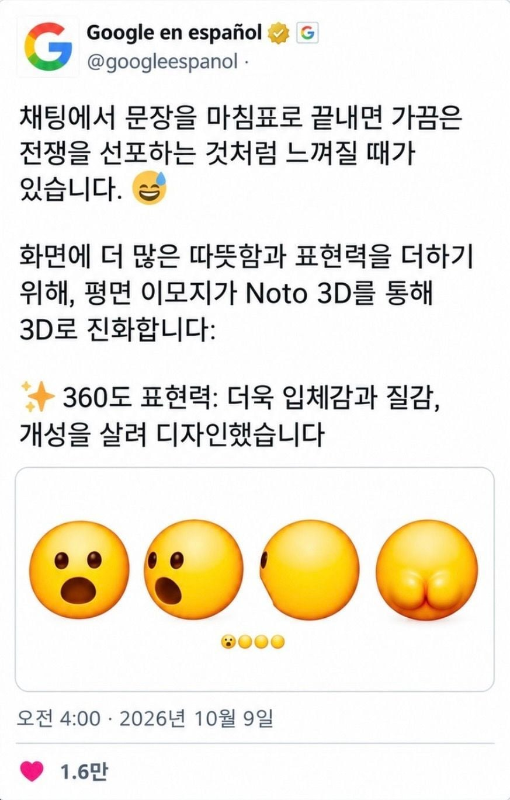

51 · 24 · 6 시간 전 · 원문

수집 당시 댓글 24개
얼떨결에태운도토리국수 · 18 시간 전
Kalysaar · 18 시간 전
오류가발생했습니다 · 18 시간 전
아 씨바 갑자기 커지네..
↳ 답글 · nesy · 18 시간 전
오류가 발생했구만
↳ 답글 · 세미파이어족 · 10 시간 전
하이닉스2 · 18 시간 전
유치원원장 · 18 시간 전
굳이 뒤까지 보여줄 필요는 없었는데
↳ 답글 · 한식사랑나라사랑 · 7 시간 전
그런 당신에게 앞을 보여드리죠 (덜렁)
TTK · 9 시간 전
야우냐 · 7 시간 전
번쩍필살검무 · 7 시간 전
옆집고양이엉덩이 · 7 시간 전
하아 똥받아먹고싶다
msi · 7 시간 전
1루2틀3일4흘 · 7 시간 전
각티슈갑티슈 · 7 시간 전
빅광대 · 6 시간 전
저는글렀어요 · 6 시간 전
골빈통신 · 6 시간 전
야 꿀벌
무도콘만씀 · 6 시간 전
미크리트 · 6 시간 전
제미나이4는요?여기 빵뎅이 개큰 이모지입니다제미 씨발
ㅆㅂ · 6 시간 전
ㅈ같은거 만들지말고 제미나이좀 살려
대변탕후루 · 6 시간 전
autumnboy · 5 시간 전
스프링클 · 2 시간 전

댓글
수집 당시 댓글 24개
얼떨결에태운도토리국수 · 18 시간 전
Kalysaar · 18 시간 전
오류가발생했습니다 · 18 시간 전
아 씨바 갑자기 커지네..
· nesy · 18 시간 전
오류가 발생했구만
· 세미파이어족 · 10 시간 전
하이닉스2 · 18 시간 전
유치원원장 · 18 시간 전
굳이 뒤까지 보여줄 필요는 없었는데
· 한식사랑나라사랑 · 7 시간 전
그런 당신에게 앞을 보여드리죠 (덜렁)
TTK · 9 시간 전
야우냐 · 7 시간 전
번쩍필살검무 · 7 시간 전
옆집고양이엉덩이 · 7 시간 전
하아 똥받아먹고싶다
msi · 7 시간 전
1루2틀3일4흘 · 7 시간 전
각티슈갑티슈 · 7 시간 전
빅광대 · 6 시간 전
저는글렀어요 · 6 시간 전
골빈통신 · 6 시간 전
야 꿀벌
무도콘만씀 · 6 시간 전
미크리트 · 6 시간 전
제미나이4는요?
여기 빵뎅이 개큰 이모지입니다
제미 씨발
ㅆㅂ · 6 시간 전
ㅈ같은거 만들지말고 제미나이좀 살려
대변탕후루 · 6 시간 전
autumnboy · 5 시간 전
스프링클 · 2 시간 전